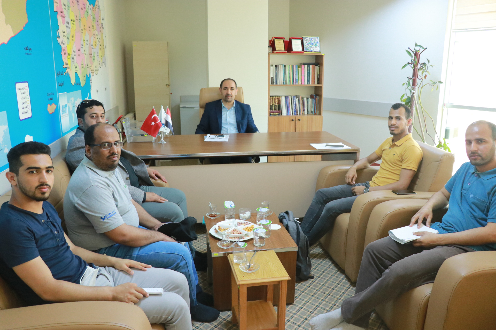

زيارة اتحاد الطلاب اليمنيين في تركيا م الهيئة الإدارية من فرع كرامان جمعية الصداقة والتعاون اليمنية-تركيا

زار صباح اليوم الاثنين اتحاد الطلاب اليمنيين في تركيا ممثلا برئيس الاتحاد عبد الرحمن المالكي واعضاء من الهيئة الإدارية من فرع كرامان ممثلا برئيس الاتحاد زكريا هديس والأمين العام أنس الحكيمي جمعية الصداقة والتعاون اليمنية-تركيا بمكتبها في اسطنبول.
وفي بداية الزيارة رحب د أحمد العقبي مدير الجمعية بالاتحاد واعضاء الهيئة الإدارية.
.وأثناء اللقاء تم مناقشة أوضاع الطلاب اليمنيين في مدينة كرامان وتم عرض الإجراءات التي تمت في التعامل فيما يخص القبولات لطلاب كرمان حيث عرضت الجمعية على الاتحاد الوثائق التي بموجبها التزم الطلاب على أنفسهم بتحمل جميع التكاليف المالية من رسوم دراسية وسكن ومعيشة والتي توضح بأن الجمعية لا تتحمل أي تكاليف مالية كما أقر بذلك المزكي والضامن
وبالنسبة للمشكلات التي واجهت الطلاب في تخصصاتهم فإن الجمعية سعت وستسعى للتواصل مع الجامعة ومتابعة حل جميع المشكلات العالقة وستقدم الجمعية ما بوسعها لأي طالب يعاني مشكلة ما مع الجامعة بحسب قدرتها وإمكانياتها المتاحة.
وفي نهاية الزيارة أكد د. أحمد العقبي مدير الجمعية على وجود كيان ممثل للطلاب اليمنيين في تركيا هو الاتحاد العام واي مشكلة أَو سوء فهم يحدث يتم التواصل عبر الاتحاد العام إلى الجمعية ، وأضاف يعتبر الطلاب من شرائح المجتمع المثقفه والتي يعول عليها قيادة الوطن في المستقبل.
حضر اللقاء أ.عبد الرحمن باهرمز مسوؤل قسم التعليم بالجمعية و د. أحمد الصالحي من طلاب مدينة كرمان.